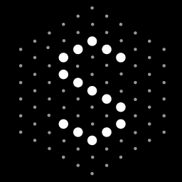

Software Development Intern
GEICO
June 2025 - Present
- Building internal tools to streamline cloud infrastructure provisioning across 20+ engineering teams, reducing manual overhead in hybrid IaaS management.
- Developing a full-stack FinOps extension that guides engineers through compute provisioning using decision matrices and predictive models to recommend cost-effective configurations.
Founding Engineer
Flow
October 2023 - June 2025
- Led backend development for an AI-powered B2B sales platform, using Spark to aggregate and transform customer data from 20+ APIs (Salesforce, HubSpot, ZoomInfo) into scalable insights.
- Built secure Django/PostgreSQL systems for lead scoring, improving sales rep productivity by 23% in pilot tests.
- Optimized CI/CD pipelines (GitHub Actions) and managed Azure infrastructure.
Undergraduate Teaching Assistant
University of Washington Information School
September 2024 – June 2025
- Taught R programming and data analysis to a class of 25 students, offering weekly 1:1 and group support that improved student assignment scores and engagement.
- Designed inclusive lesson materials and feedback loops to support a diverse range of learners.
Data Automation Intern
 Nsight, Inc.
Nsight, Inc.
June 2024 - August 2024
- Automated lead-to-opportunity workflows in Salesforce, increasing operational efficiency by 62% through the use of Python and Excel-based automation, creating interactive dashboards in Tableau.
- Analyzed and validated extensive Oracle and Salesforce CRM datasets, ensuring data integrity and accuracy.
Software Automation Intern
 Seam
June 2024 - August 2024
- Built and maintained Selenium scrapers to extract structured data from 20+ external sources, automating the intake of 10,000+ data points across real estate and e-commerce use cases.
- Designed Python automation pipelines to transform scraped content into clean datasets, improving downstream analytics and client reporting speed.
Apprentice - All In For Students
 GitHub
GitHub
Jan 2024 - Mar 2024 · 3 mos
- Selected for the 2024 cohort, completed advanced Career Readiness Workshops, and provided open source and DevOps expertise.
- Participated in mock interviews and workshops with Major League Hacking, enhancing professional skills.
Undergraduate DevOps Researcher
SEAL Lab, University of Washington
September 2023 - December 2023
- Committed 15+ hours weekly to DevOps research, gaining experience in technical writing, internal communication, and automation development.